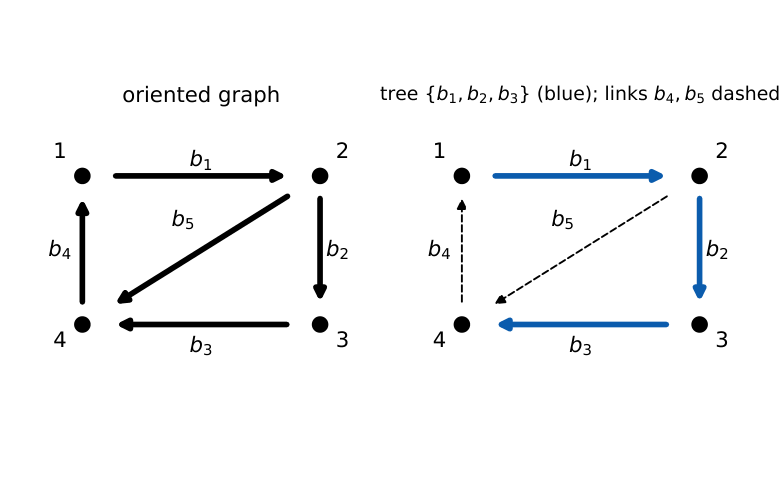
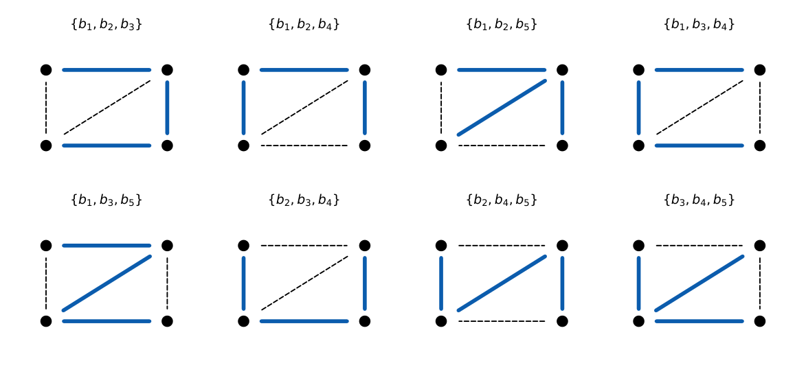

Network Topology and Advanced Circuit Techniques
In this chapter
Counting questions (twigs, links, trees), matrix sizes, and identities like \(\mathbf A\mathbf B^T=\mathbf 0\). Occasionally a small nodal or loop equation set written in matrix form. Mostly 1-mark.
14.1 Network graphs
A graph replaces each element by a line (a branch) joining nodes; an oriented graph gives each branch a reference direction (the assumed current direction). A graph is connected if a path exists between any two nodes, and planar if it can be drawn without crossings. Voltage sources are treated as short circuits and current sources as open circuits when forming the graph of the passive network (they are kept as separate branches if they need their own current/voltage variables).
14.2 Trees and links
A tree is a connected subgraph containing all nodes but no loops. Branches in the tree are twigs; the remaining branches are links (chords).
For a connected graph with \(n\) nodes and \(b\) branches:
twigs \(=n-1\), links \(=b-n+1\) (number of independent loops \(=\) links),
independent KCL equations \(=n-1\) (cut-sets), independent KVL equations \(=b-n+1\) (tie-sets).
Number of trees of the complete graph \(K_n\): \(n^{n-2}\) (Cayley). In general it equals \(\det(\mathbf A_r\mathbf A_r^T)\).

14.3 Incidence matrix
The node–branch incidence matrix \(\mathbf A_a\) (\(n\times b\)) has entries \(a_{jk}=+1\) if branch \(k\) leaves node \(j\), \(-1\) if it enters node \(j\), \(0\) if not connected. Rows sum to zero column-wise, so one row is redundant: deleting the row of a reference node gives the reduced incidence matrix \(\mathbf A\) (\((n-1)\times b\)), of rank \(n-1\).
For the graph in the figure (branches \(b_1{:}1\to2\), \(b_2{:}2\to3\), \(b_3{:}3\to4\), \(b_4{:}4\to1\), \(b_5{:}2\to4\)), reference node 4: \[\mathbf A=\begin{bmatrix}1&0&0&-1&0\\-1&1&0&0&1\\0&-1&1&0&0\end{bmatrix}.\]
KCL: \(\mathbf A\mathbf i=\mathbf 0\). Branch voltages from node voltages \(\mathbf e\): \(\mathbf v=\mathbf A^T\mathbf e\) (KVL automatically satisfied).
14.4 Tie-set matrix
Each link with its unique tree path forms a fundamental loop (tie-set), oriented along the link. The tie-set (loop) matrix \(\mathbf B\) (\((b-n+1)\times b\)) has \(b_{jk}=+1\) if branch \(k\) is in loop \(j\) with the same orientation, \(-1\) if opposite, \(0\) if not in it. KVL: \(\mathbf B\mathbf v=\mathbf 0\). Branch currents from loop currents \(\mathbf i_\ell\): \(\mathbf i=\mathbf B^T\mathbf i_\ell\).
Tree \(\{b_1,b_2,b_3\}\): loop 1 (link \(b_4\)): \(b_4,b_1,b_2,b_3\) all in the direction of circulation; loop 2 (link \(b_5\)): \(b_5\) then back via \(b_3,b_2\) against their reference: \[\mathbf B=\begin{bmatrix}1&1&1&1&0\\0&-1&-1&0&1\end{bmatrix},\qquad\mathbf A\mathbf B^T=\mathbf 0\ \checkmark\]
14.5 Cut-set matrix
A fundamental cut-set is the set of branches consisting of exactly one twig and the links that must be cut to separate the graph into two parts, oriented along the twig. The cut-set matrix \(\mathbf Q\) (\((n-1)\times b\)): KCL \(\mathbf Q\mathbf i=\mathbf 0\); branch voltages from twig voltages: \(\mathbf v=\mathbf Q^T\mathbf v_t\).
Same graph and tree: \(\mathbf Q=\begin{bmatrix}1&0&0&-1&0\\0&1&0&-1&1\\0&0&1&-1&1\end{bmatrix}\); note \(\mathbf B\mathbf Q^T=\mathbf 0\).
Order branches as (twigs | links). Then \(\mathbf Q=[\,\mathbf 1\ |\ \mathbf Q_\ell\,]\), \(\mathbf B=[\,\mathbf B_t\ |\ \mathbf 1\,]\), and \(\mathbf B_t=-\mathbf Q_\ell^T\).
Check with the example: \(\mathbf Q_\ell=\begin{bmatrix}-1&0\\-1&1\\-1&1\end{bmatrix}\), \(-\mathbf Q_\ell^T=\begin{bmatrix}1&1&1\\0&-1&-1\end{bmatrix}=\mathbf B_t\). ✓
14.6 Network equations
- Nodal: \(\mathbf A\mathbf Y_b\mathbf A^T\mathbf e=\mathbf A(\mathbf Y_b\mathbf v_s-\mathbf i_s)\), where \(\mathbf Y_b\) is the (diagonal for uncoupled elements) branch admittance matrix.
- Loop: \(\mathbf B\mathbf Z_b\mathbf B^T\mathbf i_\ell=\mathbf B(\mathbf v_s-\mathbf Z_b\mathbf i_s)\).
- Cut-set: \(\mathbf Q\mathbf Y_b\mathbf Q^T\mathbf v_t=\mathbf Q(\mathbf Y_b\mathbf v_s-\mathbf i_s)\).
The matrix \(\mathbf A\mathbf Y_b\mathbf A^T\) is exactly the node conductance matrix of Chapter 2.
14.7 Matrix-based circuit analysis
Branches \(b_1\)–\(b_5\) of the graph, each a \(1\) S conductance, no sources except a \(1\) A source entering node 1 (added as an injection). \(\mathbf A\mathbf A^T=\begin{bmatrix}2&-1&0\\-1&3&-1\\0&-1&2\end{bmatrix}\). Solving \(\mathbf A\mathbf A^T\mathbf e=[1,0,0]^T\): \(2e_1-e_2=1\), \(-e_1+3e_2-e_3=0\), \(-e_2+2e_3=0\). From the last, \(e_3=e_2/2\); then \(e_1=2.5e_2\) and \(5e_2-e_2=1\), so \(e_2=0.25\), \(e_1=0.625\), \(e_3=0.125\) V. The resistance between node 1 and node 4 is therefore \(0.625\ \Omega\).
14.8 Special network structures
- Planar graphs have a dual (meshes \(\leftrightarrow\) nodes; series \(\leftrightarrow\) parallel; \(R\leftrightarrow G\); \(L\leftrightarrow C\)).
- Bipartite/ladder networks give tridiagonal matrices.
- Number of trees determines the number of terms in symbolic network functions.

Q1. A connected network has \(10\) branches and \(6\) nodes. The number of links is (A) 4 (B) 5 (C) 6 (D) 10.
Q2. The rank of the reduced incidence matrix of a connected graph with \(n\) nodes is (A) \(n\) (B) \(n-1\) (C) \(b\) (D) \(b-n+1\).
Q3. Which identity holds for a connected graph (same branch ordering)? (A) \(\mathbf A\mathbf B=\mathbf 0\) (B) \(\mathbf A\mathbf B^T=\mathbf 0\) (C) \(\mathbf A=\mathbf B\) (D) \(\mathbf A^T\mathbf B=\mathbf 0\).
Answers: Q1 (B): \(10-6+1=5\). Q2 (B). Q3 (B): KCL and KVL consistency.
Q4. The number of trees of the complete graph \(K_4\) is (A) \(16\) (B) \(8\) (C) \(24\) (D) \(4\).
Q5. In a connected graph with \(b=12\), \(n=7\), the sizes of the reduced incidence matrix and of the tie-set matrix are (A) \(6\times12\), \(6\times12\) (B) \(7\times12\), \(5\times12\) (C) \(6\times12\), \(7\times12\) (D) \(12\times6\), \(12\times7\).
Answers: Q4 (A): \(4^{2}=16\). Q5 (A): \((n-1)\times b=6\times12\); \((b-n+1)\times b=6\times12\).
Q6. A connected graph has \(b=15\) branches and \(n=9\) nodes. Independent KVL equations: .
Q7. Number of trees in the example graph (four nodes, five branches) is .
Answers: Q6: \(15-9+1=7\). Q7: \(8\).
Q8. For a connected graph: (A) twigs \(=n-1\) (B) links \(=b-n+1\) (C) each link defines a unique fundamental loop (D) a tree contains exactly one loop.
Answers: Q8: (A), (B), (C).
(i) Using \(n\) rather than \(n-1\) for the reduced matrix. (ii) Forgetting orientation signs. (iii) Assuming the tree is unique. (iv) Treating an ideal source as an ordinary branch in the tree count without stating the convention.
T1. A graph has \(b=9\), \(n=5\). Find twigs and links.
T2. Write \(\mathbf A_r\) for two nodes connected by three parallel branches (reference node \(2\)).
Answers: T1: twigs \(4\), links \(5\). T2: \(\mathbf A_r=[1\ \ 1\ \ 1]\) (all branches leave node 1 towards node 2).
- Twigs \(n-1\), links \(b-n+1\). \(\mathbf A\): \((n-1)\times b\); \(\mathbf B\), tie-set: \((b-n+1)\times b\); \(\mathbf Q\): \((n-1)\times b\).
- KCL: \(\mathbf A\mathbf i=0\), \(\mathbf Q\mathbf i=0\); KVL: \(\mathbf B\mathbf v=0\); \(\mathbf v=\mathbf A^T\mathbf e\); \(\mathbf i=\mathbf B^T\mathbf i_\ell\).
- \(\mathbf A\mathbf B^T=0\); \(\mathbf B_t=-\mathbf Q_\ell^T\). Nodal matrix \(=\mathbf A\mathbf Y_b\mathbf A^T\).
- Trees of \(K_n\): \(n^{n-2}\); general: \(\det(\mathbf A\mathbf A^T)\).